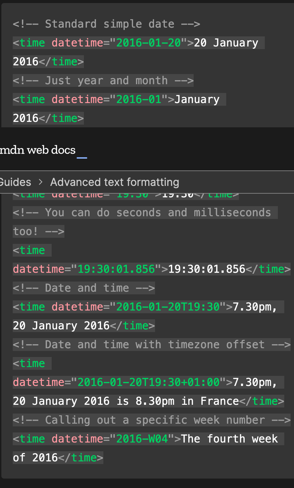
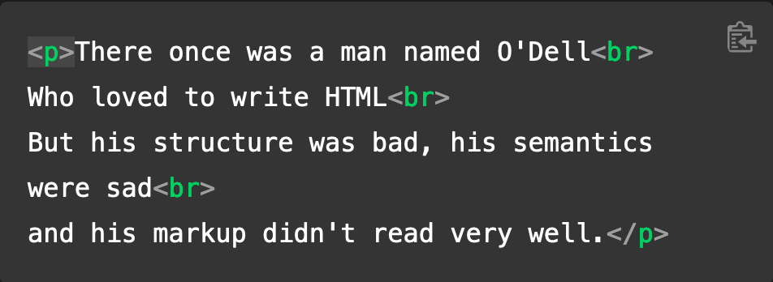
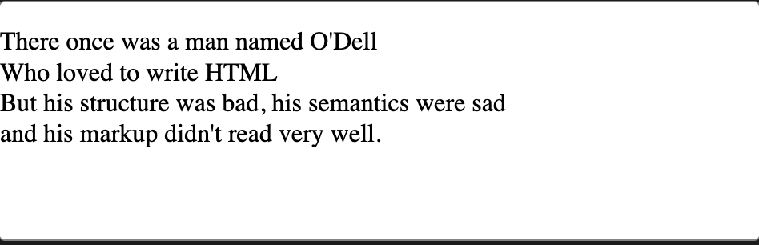
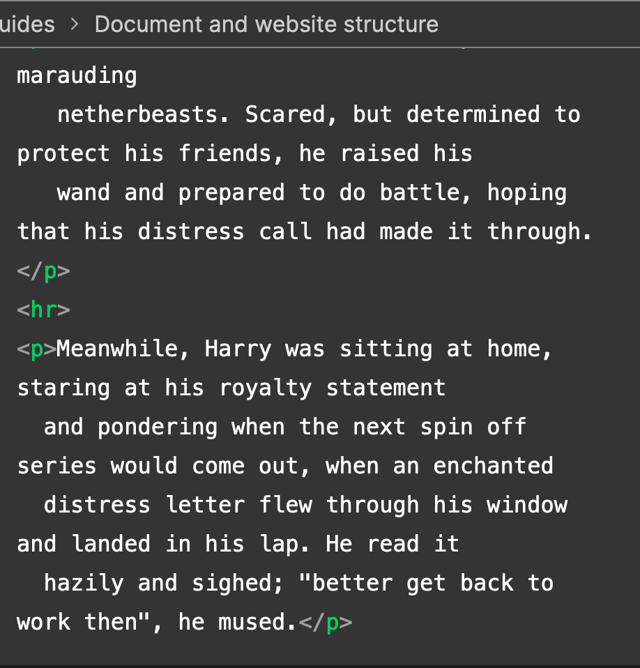
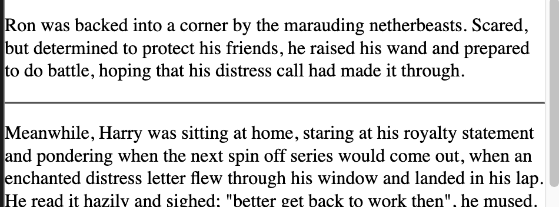

We do lots of work with Narwhals. To find out more about this work, click here.
You can email our support team if you have any more questions — click here to do so.
You can also click here to download our factfile, which contains lots more information, including an FAQ.
Description lists
Description lists example
soliloquy
In drama, where a character speaks to themselves, representing their inner thoughts or feelings and in the
process relaying them to the audience (but not to other characters.)
monologue
In drama, where a character speaks their thoughts out loud to share them with the audience and any other
characters present.
aside
In drama, where a character shares a comment only with the audience for humorous or dramatic effect. This is
usually a feeling, thought or piece of additional background information.
Quotations
Block Quotation
If a section of paragraph, multiple paragraphs or list is qioted from somewhere , you should wrap in a
<blockquote> and a URL pointing tot the source of the quote inside a cite attribute
Example
Here is the blockquote:
The HTML <blockquote> Element (or HTML Block
Quotation Element) indicates that the enclosed text is an extended quotation.
Inline Quotation
In Inline quotation it uses the <q> element.
Example:
The quote element - <q> - is intended for short quotations
taht doesn't require paragraph breaks
Hello and welcome to my motivation page. As Confucius' quotes site
Confucius quotes site says:
It does not matter how slowly you go as long as you do
not stop.
I also love the concept of positive thinking, and The Need To Eliminate Negative Self Talk (as
mentioned in
Affirmations for Positive Thinking.)
using <abbr> element for abbreviation
NASA, the National Aeronautics and Space Administration, sure does some exciting work.
Marking up contact details with <address> :
Superscript and subscript
Used for dates, chemical formulas, mathematical equations and thje elements used is <sup> and <
sub>
writing computer code
<code>: For marking up generic pieces of computer code.
<pre>: For retaining whitespace (generally code blocks) — if you use indentation or excess whitespace
inside your text, browsers will ignore it and you will not see it on your rendered page. If you wrap the
text in <pre><pre/> tags however, your whitespace will be rendered identically to how you see
it in your text editor.
<var>: For specifically marking up variable names.
<kbd>: For marking up keyboard (and other types of) input entered into the computer.
<samp>: For marking up the output of a computer program.
Marking up time and dates

Line breaks
<br> creates a line break in a paragraph


The thematic break element
<hr> elements create a horizontal line to denote a thematic change in the text


Dr. Eleanor Gaye
Awesome Science faculty
University of Awesome
Bobtown, CA 99999,
USA
Tel: 123-456-7890
Email: no_reply@example.com
Miss Eileen Dover
4321 Cliff Top Edge
Dover, CT9 XXX
UK
Re: Eileen Dover university application
Dear Eileen,
Thank you for your recent application to join us at the University of Awesome's science faculty to study as part of your PhD next year. I will answer your questions one by one, in the following sections.
Starting dates
We are happy to accommodate you starting your study with us at any time, however it would suit us better if you could start at the beginning of a semester; the start dates for each one are as follows:
First semester: 9 September 2016
Second semester: 15 January 2017
Third semester: 2 May 2017
Please let me know if this is ok, and if so which start date you would prefer.
You can find more information about important university dates on our website.
Subjects of study
At the Awesome Science Faculty, we have a pretty open-minded research facility — as long as the subjects fall somewhere in the realm of science and technology. You seem like an intelligent, dedicated researcher, and just the kind of person we'd like to have on our team. Saying that, of the ideas you submitted we were most intrigued by are as follows, in order of priority:
Turning H2O into wine, and the health benefits of Resveratrol (C14H12O3.)
Measuring the effect on performance of funk bassplayers at temperatures exceeding 30°C (86°F), when the audience size exponentially increases (effect of 3 × 103 increasing to 3 × 104.)
HTML and CSS constructs for representing musical scores.
So please can you provide more information on each of these subjects, including how long you'd expect the research to take, required staff and other resources, and anything else you think we'd need to know? Thanks.
Exotic dance moves
Yes, you are right! As part of my post-doctorate work, I did study exotic tribal dances. To answer your question, my favourite dances are as follows, with definitions:
Polynesian chicken dance
A little known but very influential dance dating back as far as 300BC, a whole village would dance around in a circle like chickens, to encourage their livestock to be "fruitful".
Icelandic brownian shuffle
Before the Icelanders developed fire as a means of getting warm, they used to practice this dance, which involved huddling close together in a circle on the floor, and shuffling their bodies around in imperceptibly tiny, very rapid movements. One of my fellow students used to say that he thought this dance inspired modern styles such as Twerking.
Arctic robot dance
An interesting example of historic misinformation, English explorers in the 1960s believed to have discovered a new dance style characterized by "robotic", stilted movements, being practiced by inhabitants of Northern Alaska and Canada. Later on however it was discovered that they were just moving like this because they were really cold.
For more of my research, see my exotic dance research page.
Yours sincerely,
Dr Eleanor Gaye
University of Awesome motto: "Be awesome to each other." -- The memoirs of Bill S Preston, Esq